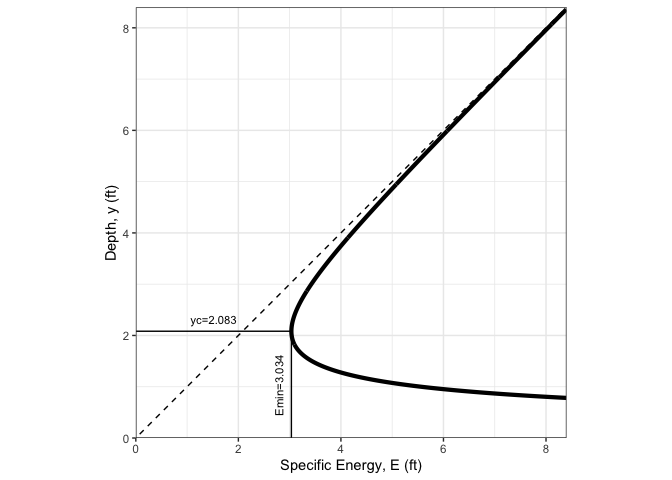
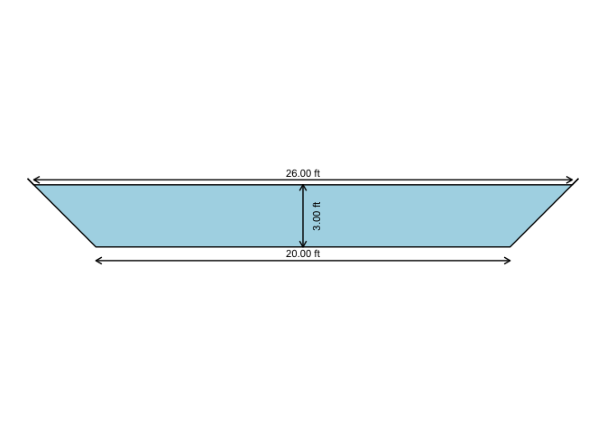

The hydraulics R package solves basic pipe hydraulics for both pressure and gravity flow conditions, and open-channel hydraulics for trapezoidal channels, including triangular and rectangular. Pressure pipe solutions include functions to 1) describe properties of water, 2) solve the Darcy-Weisbach equation for friction loss through pipes, and 3) plot a Moody diagram. There are also functions for matching a pump characteristic curve to a system curve, and solving for flows in a pipe network using the Hardy-Cross method. Partially-filled pipe and other open-channel flow solutions are solved with the Manning equation. The format of functions and pressure pipe solutions are designed to be compatible with the iemisc package, and the open channel hydraulics solutions are modifications of code in that package.
Installation
#Install the stable CRAN version of this package
install.packages("hydraulics")
#Install the development version of this package
if (!requireNamespace("remotes", quietly = TRUE)) install.packages("remotes")
remotes::install_github("EdM44/hydraulics")Examples (see more examples in the function descriptions)
1) Type 1 problem (solve for friction loss): Eng (US) units
D <- 20/12 #20 inch converted to ft
L <- 10560 #ft
Q <- 4 #ft3/s
T <- 60 #F
ks <- 0.0005 #ft
#Optionally, use utility functions to find the Reynolds Number and friction factor, f:
reynolds_number(V = velocity(D, Q), D = D, nu = kvisc(T = T, units = "Eng"))
#> [1] 248624.7
colebrook(ks = ks, V = velocity(D, Q), D = D, nu = kvisc(T = T, units = "Eng"))
#> [1] 0.0173031
#Solve directly for the missing value of friction loss
ans1 <- darcyweisbach(Q = Q,D = D, L = L, ks = ks, nu = kvisc(T=T, units="Eng"), units = c("Eng"))
#> hf missing: solving a Type 1 problem
cat(sprintf("Reynolds no: %.0f\nFriction Fact: %.4f\nHead Loss: %.2f ft\n", ans1$Re, ans1$f, ans1$hf))
#> Reynolds no: 248625
#> Friction Fact: 0.0173
#> Head Loss: 5.72 ft2) Type 2 (solving for flow rate, Q): SI Units
D <- .5 #m
L <- 10 #m
hf <- 0.006*L #m
T <- 20 #C
ks <- 0.000046 #m
ans2 <- darcyweisbach(D = D, hf = hf, L = L, ks = ks, nu = kvisc(T=T, units='SI'), units = c('SI'))
#> Q missing: solving a Type 2 problem
cat(sprintf("Reynolds no: %.0f\nFriction Fact: %.4f\nFlow: %.2f m3/s\n", ans2$Re, ans2$f, ans2$Q))
#> Reynolds no: 1010337
#> Friction Fact: 0.0133
#> Flow: 0.41 m3/sType 3 (solving for diameter, D): Eng (US) units
Q <- 37.5 #flow in ft^3/s
L <- 8000 #pipe length in ft
hf <- 215 #head loss due to friction, in ft
T <- 68 #water temperature, F
ks <- 0.0008 #pipe roughness, ft
ans3 <- darcyweisbach(Q = Q, hf = hf, L = L, ks = ks, nu = kvisc(T=T, units='Eng'), units = c('Eng'))
#> D missing: solving a Type 3 problem
cat(sprintf("Reynolds no: %.0f\nFriction Fact: %.4f\nDiameter: %.2f ft\n", ans3$Re, ans3$f, ans3$D))
#> Reynolds no: 2336974
#> Friction Fact: 0.0164
#> Diameter: 1.85 ftSolving for roughness height (ks): Eng (US) units, print results as data frame
D <- 1.85 #diameter in ft
Q <- 37.5 #flow in ft^3/s
L <- 8000 #pipe length in ft
hf <- 215 #head loss due to friction, in ft
T <- 68 #water temperature, F
ans4 <- darcyweisbach(Q = Q, D = D, hf = hf, L = L, nu = kvisc(T=T, units='Eng'), units = c('Eng'))
#> ks missing: solving for missing roughness height
knitr::kable(setNames(as.data.frame(unlist(ans4)),c('value')), format = "html", padding=0)| value | |
|---|---|
| Q | 3.750000e+01 |
| V | 1.395076e+01 |
| L | 8.000000e+03 |
| D | 1.850000e+00 |
| hf | 2.150000e+02 |
| f | 1.649880e-02 |
| ks | 8.176000e-04 |
| Re | 2.335866e+06 |
Utility functions for water properties can be used independently as well:
Plot a specific energy diagram for the channel of last example
spec_energy_trap( Q = oc3$Q, b = oc3$b, m = oc3$m, scale = 4, units = "Eng" )
Plot the cross section for the last example
xc_trap( y = oc3$y, b = oc3$b, m = oc3$m, units = "Eng" )
For other functions related to pump characteristic curves and operating point determination, and pipe network solutions, refer to the hydraulics vignette.